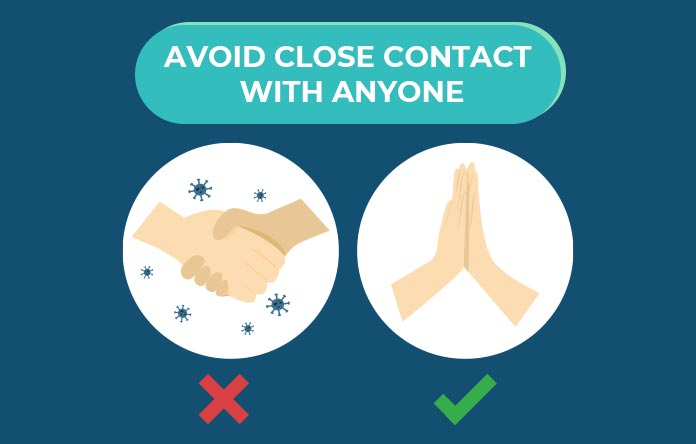
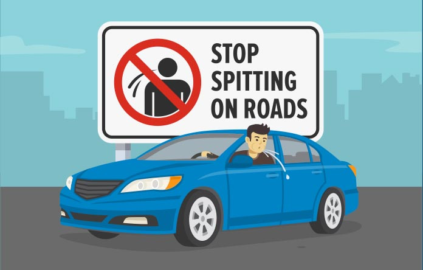
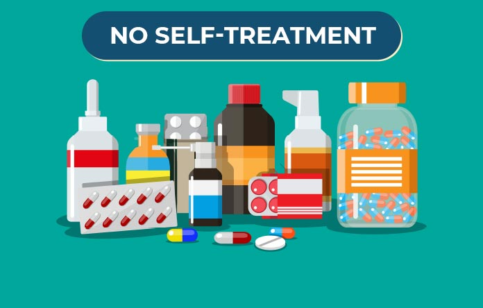

COVID-19: 10 Do’s and Dont's To Stay Safe During The Outbreak
The coronavirus pandemic has taken everybody by alarm. The internet is filled with information about the virus and its spread, many of it also wrong, causing panic among the people. While we all know the basic precautions to be taken to save yourself from being infected, here is a list of 10 things you shoul do to save the infection and panic about the disease from escalating further.
Do's
The first thing you got to keep in mind is a precaution. Here is what you need to do to protect yourself from the outbreak.
1. Hand Wash

Regular hand wash for 30 seconds will help you avoid germs or any kind of infection. Use soap or hand sanitizer for better results and do this every time you travel or touch anything.
2. Cover Your Mouth & Nose

Covering your mouth and nose while sneezing or when anyone next to coughs or sneezes can do you a lot better. Coronavirus usually spreads through cough and covering your nose and mouth will save you from this epidemic.
3. Consult A Doctor If Sick

If you are suffering from a common cold, cough, nausea, vomiting, shortness of breath and fatigue make it a point to consult a doctor at the earliest. Any of these symptoms could be a sign that you are suffering from the virus.
4. Stay Indoors

Avoid being in crowded places. An infected person can spread the virus instantly and crowded places is a good way to accomplish this. Make sure you wear full sleeves shirts with anti-pollution masks when you travel. Staying indoors is a rather safe option.
Also Read: Facts About Coronovirus , Healthy videos
Dont's
A virus that is as deadly as swine flu and viral fever needs to be treated with utmost sensitivity and here is what you consider not doing.
5. Avoid Close Contact With Anyone

Do not get close to anyone, especially touching or laughing closely. Also, use anti-pollution masks when out with friends or family. Avoid touching anyone and do not use the same utensils used by another. These simple non-touchy ways can do good until the outbreak comes to an end.
6. Do Not Spit

Spitting can increase the spread of the virus. Avoid spiting at in public and home. Also, avoid getting close to a sick person suffering from cold and cough.
7. Avoid Using Public Transport

Travelling by cab, flight, bus, train and tramp can get you infected. Use anti-pollution masks and carry a hand sanitizer with you everywhere. Consider travelling by your own vehicle and avoid public transport. In case you are feeling sick, it is advised that you avoid travelling and consult a doctor at the earliest.
8. Do Not Use Over The Counter Medicines

If you are suffering from dry cough, back pain, nausea and shortness of breath it is recommended that you consult a doctor rather than opt for self-medication that can leave you battling with a deadly illness. Say no to antibiotics as it would later lead to antibiotic resistance.
9. Don’t Panic, Take It Easy

Most often a state of fear can lead to taking wrong decisions and use of self-medication. All you need to keep in mind is hygiene i.e. regular hand wash, use of anti-pollution masks and consult a doctor if you are sick.
10. Don’t Touch Your Face

Do not touch your face, nose and mouth often. This avoids the risks of developing the virus. Wash your hands with soap or hand sanitizer and this will do you good.
Also Read: Facts About Coronovirus , Healthy videos

Via giphy
Approximate Covid-19 Cases In The India:
- Total Cases: 1,45,547
- active Cases: 80,510
- people Recovered: 60,851
- people Deceased: 4,175
Approximate Covid-19 Cases In The World:
- Total Cases: 5,603,558
- active Cases: 2,873,509
- people Recovered:2,381,855
- people Deceased:348,194